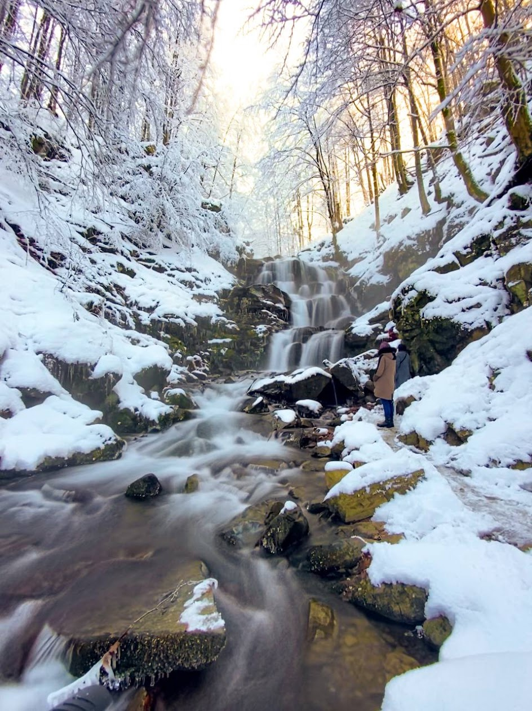
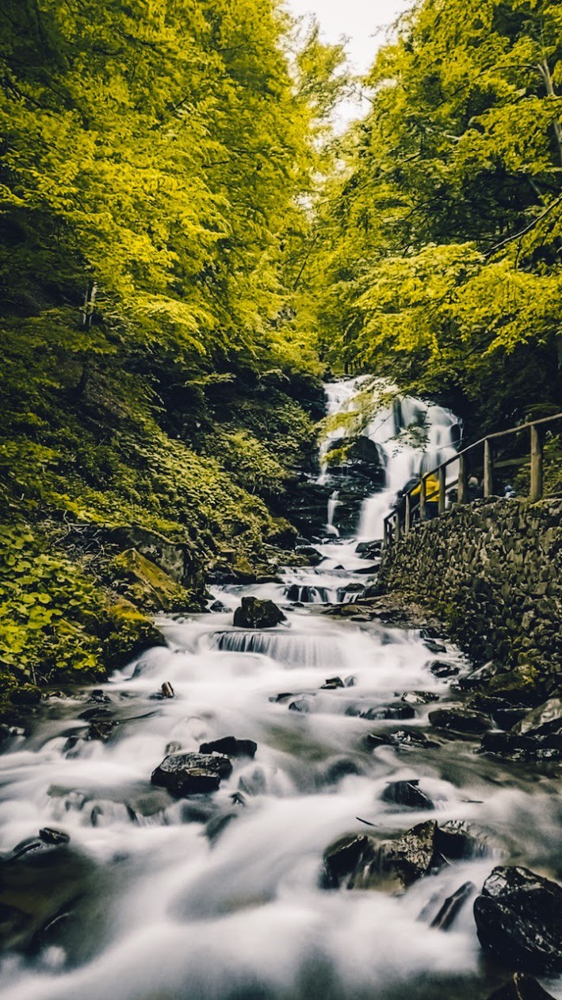

Відкрийте для себе найкрасивіші природні скарби Закарпаття
Виїзд з Чернівців рано вранці о 5.00, Коломия 6,15, Івано-Франківськ 7.00
Першою робимо фото зупинку на Синевирському перевалі. З видом на гори з усіх боків.
Це найбільше та найглибше гірське озеро в Україні, котре є одним із семи природних чудес нашої країни. Будемо гуляти серед цієї краси.
Тривалість: близько 2х годин. Лісок, пам'ятки природи, туристичний ярмарок із закарпатськими смаколиками і вином.
Гід все покаже😇
Ви зможете познайомитися з цими хижаками зблизька та поспостерігати за їх поведінкою в безпечних умовах. Також на території екопарку є і інші тварини: альпаки, верблюди, олені, рись.
Порада: прихопіть із собою моркву - тварин можна годувати!
Переїзд: до години
Ми познайомимося з найвеличнішим водоспадом на Закарпатті, відчуємо на собі його гірську свіжість і невимовну природну красу
Настоянки, сувеніри, сири, вироби ручної праці.
Вільний час перед виїздом.
Смачно повечеряємо поруч з водоспадом у місцевому кафе (їжа на вогні)
Повертаємось у місто Івано-Франківськ ~ 21.00, Чернівці ~ 23.00, щоб усі встигли добратись до комендантської години додому.
Готові відкрити для себе красу Синевиру та водоспаду Шипіт? Зв'яжіться з нами для бронювання!

